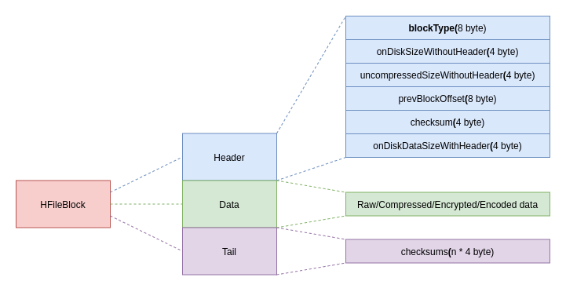
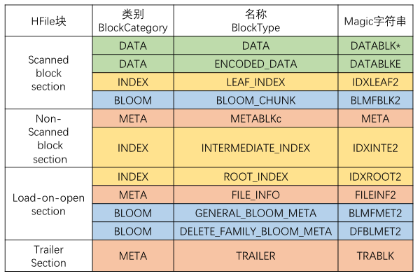
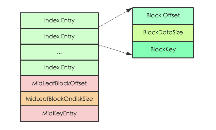
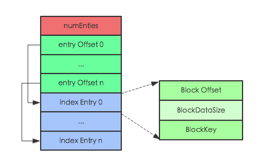
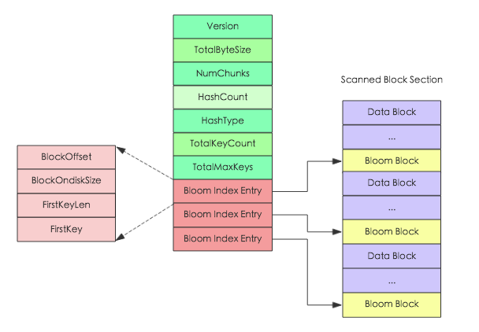
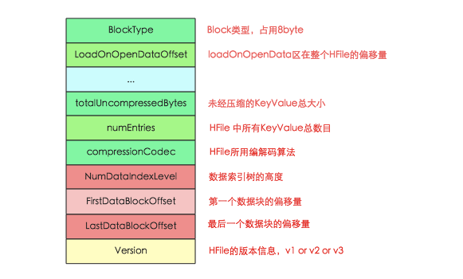

HFile介绍
HFile是HBase存储数据的文件组织形式，参考BigTable的SSTable和Hadoop的TFile实现。从HBase开始到现在，HFile经历了三个版本，其中V2在0.92引入，V3在0.98引入。HFileV1版本的在实际使用过程中发现它占用内存多，HFile V2版本针对此进行了优化，HFile V3版本基本和V2版本相同，只是在cell层面添加了Tag数组的支持。
HFile V2逻辑结构
文件主要分为四个部分：Scanned block section，Non-scanned block section，Opening-time data section和Trailer。如下图所示：

其中每个部分的作用如下
| 名称 | 说明 |
|---|---|
| Scanned block section | 表示顺序扫描HFile时所有的数据块将会被读取，包括DataBlock，Leaf Index Block，Bloom Block |
| Non-scanned block section | 表示在HFile顺序扫描的时候数据不会被读取，主要包括Meta Block(用来兼容v1，v2后就不再存储数据了)和Intermediate Level Data Index Blocks两部分 |
| Load-on-open-section | 该部分数据在HBase的region server启动时，会被加载到内存中。其中包括FileInfo、Bloom filter block、Data block index和Meta block index。 |
| Trailer | 记录了HFile的基本信息、各个部分的偏移值和寻址信息。 |
HFile V2物理结构

如上图所示， HFile会被切分为多个大小相等的block块，每个block的大小可以在创建表列簇的时候通过参数blocksize ＝> '65535'进行指定，默认为64k，大号的Block有利于顺序Scan，小号Block利于随机查询，因而需要权衡。
可以使用下述命令查看实际的一个HFile，具体内容可以参考附件。
|
|
HFileBlock介绍
HFileBlock主要分为3部分：Block Header，Block Data和Block Tail。其中，Block Header用来存储元数据，包括block类型，压缩block大小，上一个block的偏移量等；而Block Data主要存储具体的数据；Block Tail则主要用来存储校验码。

HFile中的BlockType总共有如下几种，后面会对几种比较重要的Block详细说明。

(图中META和METABLKc标反了)
DATA
DataBlock是HBase中数据存储的最小单元。DataBlock中主要存储用户的KeyValue数据（KeyValue后面一般会跟一个timestamp，图中未标出），而KeyValue结构是HBase存储的核心，每个数据都是以KeyValue结构在HBase中进行存储。KeyValue结构在内存和磁盘中可以表示为下图

每个KeyValue都由4个部分构成，分别为key length，value length，key和value。其中key value和value length是两个固定长度的数值，而key是一个复杂的结构，首先是rowkey的长度，接着是rowkey，然后是ColumnFamily的长度，再是ColumnFamily，之后是ColumnQualifier，最后是时间戳和KeyType（keytype有四种类型，分别是Put、Delete、 DeleteColumn和DeleteFamily），value就没有那么复杂，就是一串纯粹的二进制数据。
ROOT_INDEX | LEAF_INDEX | INTERMEDIATE_INDEX
HFile中的index level是不固定的，根据不同的数据类型和数据大小有不同的选择，主要有两类，一类是single-level（单级索引），另一类是multi-level（多级索引，索引block无法在内存中存放，所以采用多级索引）。
HFile中的index chunk有两大类，分别是root index chunk、nonRoot index chunk。而nonRoot index chunk又分为interMetadiate index chunk和leaf index chunk，但intermetadiate index chunk和leaf index chunk在内存中的分布是一样的。
- 对于meta block和bloom block
采用的索引是single-level形式，只用root index chunk来保存指向block的索引信息（
root_index -> xxx_block） - 对于data
- 当data block数量较少时，采用的是single level，一般情况下是一级索引(
root_index -> data_block)； - 当data block数量较多时，采用的是multi-level，一般情况下是两级索引，使用root index chunk和leaf index chunk来保存索引信息(
root_index -> leaf_index -> data_block)； - 当data block数量很多时，采用的是multi-level，一般情况下是三级索引，使用root index chunk、intermetadiate index chunk和leaf index chunk来保存指向数据的索引（
root_index -> intermediate_index -> leaf_index->data_block）。
- 当data block数量较少时，采用的是single level，一般情况下是一级索引(
ROOT_INDEX
Root Index Block表示索引树根节点索引块，可以作为bloom的直接索引，也可以作为data索引的根索引。

其中Index Entry表示具体的索引对象，每个索引对象由3个字段组成，Block Offset表示索引指向数据块的偏移量，BlockDataSize表示索引指向数据块在磁盘上的大小，BlockKey表示索引指向数据块中的第一个key。除此之外，还有另外3个字段用来记录MidKey的相关信息，MidKey表示HFile所有Data Block中中间的一个Data Block，用于在对HFile进行split操作时，快速定位HFile的中间位置。需要注意的是single-level索引结构和mutil-level结构相比，就只缺少MidKey这三个字段。
Root Index Block会在HFile解析的时候直接加载到内存中，此处需要注意在Trailer Block中有一个字段为dataIndexCount，就表示此处Index Entry的个数。因为Index Entry并不定长，只有知道Entry的个数才能正确的将所有Index Entry加载到内存。
LEAF_INDEX | INTERMEDIATE_INDEX
当HFile中Data Block越来越多，single-level结构的索引已经不足以支撑所有数据都加载到内存，需要分化为mutil-level结构。mutil-level结构中NonRoot Index Block作为中间层节点或者叶子节点存在，无论是中间节点还是叶子节点，其都拥有相同的结构，如下图所示

和Root Index Block相同，NonRoot Index Block中最核心的字段也是Index Entry，用于指向叶子节点块或者数据块。不同的是，NonRoot Index Block结构中增加了block块的内部索引entry Offset字段，entry Offset表示index Entry在该block中的相对偏移量（相对于第一个index Entry)，用于实现block内的二分查找。所有非根节点索引块，包括Intermediate index block和leaf index block，在其内部定位一个key的具体索引并不是通过遍历实现，而是使用二分查找算法，这样可以更加高效快速地定位到待查找key。
BLOOM_CHUNK
Bloom Index Block结构中totalByteSize表示位数组的bit数，numChunks表示Bloom Block的个数，hashCount表示hash函数的个数，hashType表示hash函数的类型，totalKeyCount表示bloom filter当前已经包含的key的数目，totalMaxKeys表示bloom filter当前最多包含的key的数目, Bloom Index Entry对应每一个bloom filter block的索引条目，作为索引分别指向 scanned block section 部分的Bloom Block，Bloom Block中就存储了对应的位数组。

Bloom Index Entry的结构见上图左边所示，BlockOffset表示对应Bloom Block在HFile中的偏移量，FirstKey表示对应BloomBlock的第一个Key。根据上文所说，一次get请求进来，首先会根据key在所有的索引条目中进行二分查找，查找到对应的Bloom Index Entry，就可以定位到该key对应的位数组，加载到内存进行过滤判断。
TRAILER
主要记录了HFile的基本信息、各个部分的偏移值和寻址信息，下图为Trailer内存和磁盘中的数据结构，其中只显示了部分核心字段：

HFile在读取的时候首先会解析Trailer Block并加载到内存，然后再进一步加载LoadOnOpen区的数据。
Reference
- Document HFile v3
- HBase Book
- HBase – 存储文件HFile结构解析
- HBase – 探索HFile索引机制
- HBase 加载Hfile时的读取过程
- HBase高性能随机查询之道 – HFile原理解析
- HADOOP-3315
附件
|
|